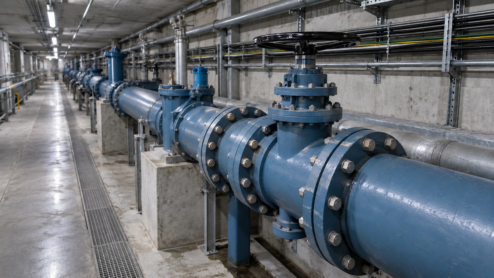
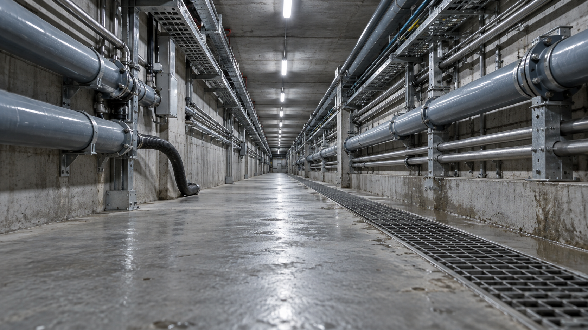

无人机 UAV-01飞控详情 ↗
定点观察
UAV-01 · 空中云台1080P / 25 FPS
B-08 / 阀组
A8 Mini 俯仰 −12.0°14:32:18
飞行遥测 14:32:18
电池电量76 %
电池电压22.8 V
下视测距2.61 m
相对高度1.85 m
横滚 1.3° 俯仰 −0.8°
图传延迟82ms
近 30 s · 60–120 ms
8.2 Mbps 丢包 0.2%
管廊全域态势 2.5D 空间档案
1.28km全域建档
38处设施档案
12个巡检点位

A 入口保障B 综合巡检C 电力设备D 给排水
点击点位查看档案已巡查待复核设备在线
空地相对位置
视觉跟踪- Δx
- +1.20 m
- Δy
- −0.35 m
- 相对高度
- 1.85 m
- 相对航向
- +2.4 °
landing_pad · 视觉估计 · 0.1 s 前
—已复核
无人车 UGV-01
驻停保持
A2 · 地面云台1080P
地面前视 · A2 Mini25 FPS
车辆遥测 14:32:18
电池电量84 %
行驶速度0.00 m/s
环境温度22.8 °C
相对湿度64 %RH
控制端UGV / APUAV / STA